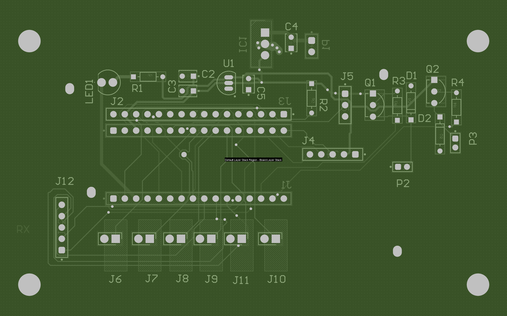

Firmware Snippet // 38 kHz IR Carrier Timing
void Timer2_ISR(void) interrupt 5
{
TF2H = 0;
if (ir_tx_enable) {
IR_LED = !IR_LED; // Toggle output to generate 38 kHz carrier
} else {
IR_LED = 0; // Force LED off between NEC protocol bursts
}
}- Reliable Comm: Engineered a robust 38 kHz IR transmission protocol using hardware timers to generate a precise NEC-protocol carrier and ensure reliable decode at the receiver.
- System Safety: Guaranteed operator safety with zero-latency, interrupt-driven emergency stops that preempt all normal control flow.
- UX Design: Enhanced user interaction via active-low PNP haptic and acoustic feedback circuits driven from MCU GPIO.
- Autonomous Control: Streamlined complex robotic navigation through custom, intuitive LCD menus with state-machine driven UI logic.